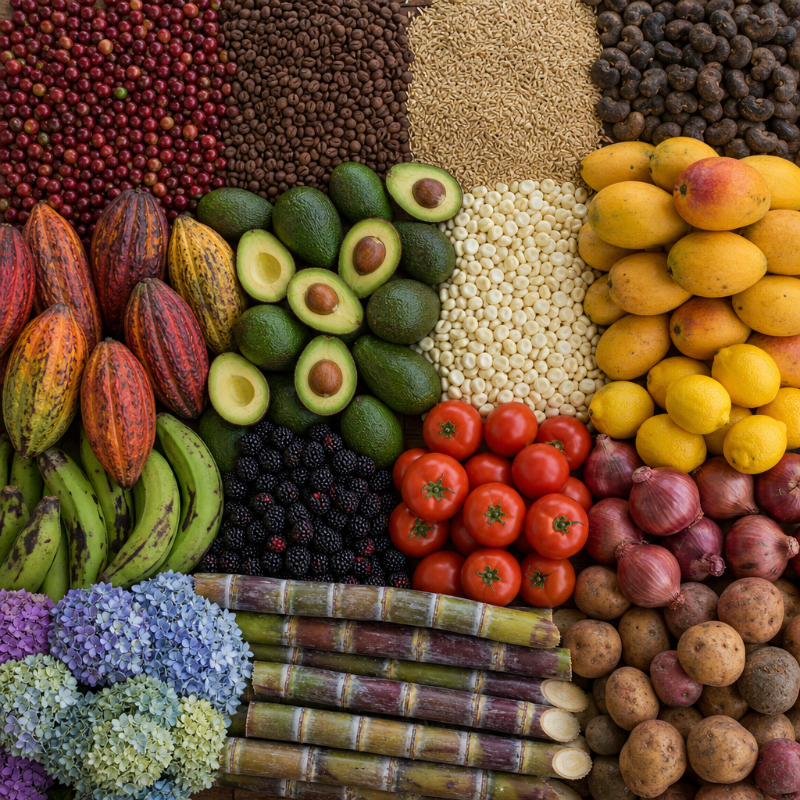

Planeamos juntos la inversión, la producción y la demanda. Únete a nuestra red para acceder a productos y servicios para tu finca y saber más sobre el campo lojano, su gente y su producción.
Tu producción puede estar en este mapa. Regístrate en nuestro sistema para ser visible al cantón y al mercado.
Registro agricultor(a)Somos el sistema municipal que permite mapear la demanda, creando datos precisos y proveyendo acceso a los detalles de cómo se necesitan los productos en el mercado. Así es posible alinear oferta y demanda en Loja.
Registrar mi demanda
Café, aguacate, cacao, maíz, cítricos y más — la tierra de Loja